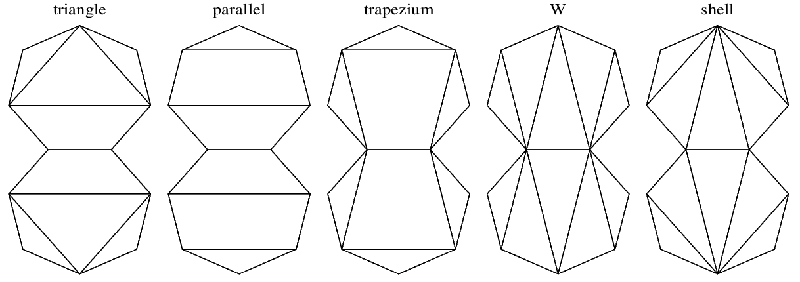
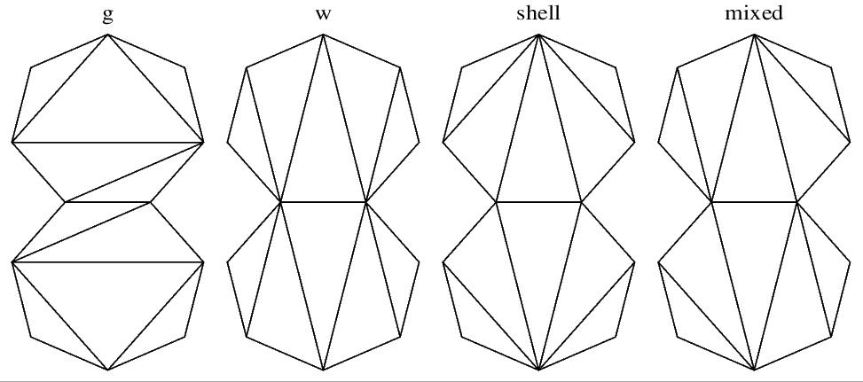
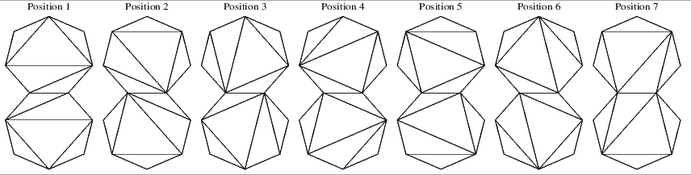
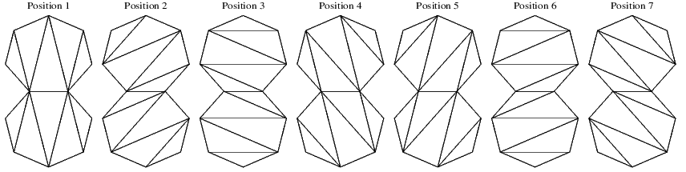

This page summarises which polyhedra were found that only consist of only regular heptagons. Of course this isn't possible just like that. To be able to fit these heptagons one has to release at least some requirement. In this case the 'flatness' requirement is released and heptagons are allowed to be folded over diagonals.
The polyhedra can be divided in different categories. First of all the polyhedra can be divided by there symmetries. Here we will only consider non-cyclic and non-dihedral based symmetries. Follow the links to see models of the respective symmetries.
On these pages the polyhedra are further sub-divided by how the heptagons are folded. and how they are connected; see more below.
This page and the models are generated after investigating folded regular heptagons by a Python program [MTUN01]. Based on that program another program was written to find polyhedra numerically. Some of these polyhedra were added to the former program. All models are displayed with help of a JavaScript bundle [MTUN02].
The tables in the links below show all the polyhedra found so far. Sometimes trivial variations exist and in those cases these are only mentioned in a comment. There is also a 'Copy' button. This will copy a link to the OFF-file viewer showing that polyhedron.
This section describes polyhedra with symmetries that have reflections. [MTUN00] recognises 5 different foldings for these symmetries. The picture below shows the different fold types for pairs of heptagons.
Note that each pair and their reflections have a vertical and horizontal reflection and a 2-fold symmetry axis. In the polyhedron these heptagons will be placed so that these symmetries are shared with the polyhedron. Of course the angle between the the two heptagons can vary, as well as the distance from the centre of the final polyhedron. The pairs of heptagons can be folded over the diagonals freely as long as the symmetry is kept.
Follow the links below to get an overview of all polyhedra with folded regular heptagons for the specified symmetry.
For symmetries that don't have reflections, any folds can be rotated around the centre of the heptagon To keep the symmetry all heptagons shall be rotated in the same way. As a consequence the heptagons are connected with different 'kinds' of edges, where the kind of an edge is with regards to the fold. Furthermore for these symmetries the pair with a certain rotation can be rotated freely around the 2-fold axis.
The picture above shows the different folds that can be used for polyhedra without reflections. There are two new folds: the 'g'-fold and the mixed fold. The triangle trapezium fold are replaced by the more general 'g'-fold. The parallel fold is just a special case of 'w'-fold (or mixed fold)
One can see that the two heptagons can be mapped onto each other by a half-turn around the centre of the common edge. The four different folds shown above can be rotated around the heptagon centre to obtain different polyhedra, which leads to many more possibilities than for the polyhedra with reflections. In the table headers these positions are numbered from 1 to 7, where 1 is the position shown here. For any increase of 1 the fold pattern is rotated one step clock-wise (for all heptagons)
For instance in the picture below positions 1 to 7 are shown for the G-fold. One can see that all these lead to different compositions.
That isn't the case for all folds. For the folds that have symmetry only part of the positions need to be checked. For instance for the W-fold, shown below, you can see that only position 1 - 4 need to be checked, since position 4 and 5, 3 and 6, and 2 and 7 are each other's mirror images.
All these polyhedra come in pairs of different handiness. Only one of these is listed on this site, and the other one isn't mentioned further.
Follow the links below to get an overview of all polyhedra that lack reflections and consist of folded regular heptagons.
2022-02-25, 09:41 CET